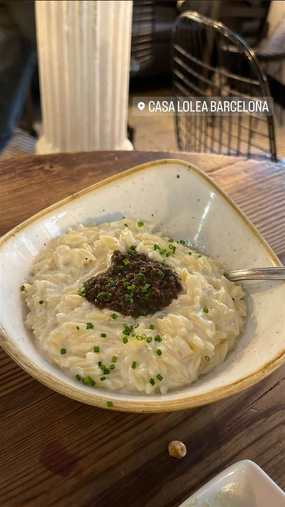

イタリアン · ボルン地区
Casa Lolea
本物の果実とワインだけで作る自社ブランドサングリア「ロレア」
CASA LOLEA BARCELONA
2013年にサラゴサでボトル入りサングリア「ロレア」を立ち上げたブルーノ・バルバス夫妻が、2014年にバルセロナのサン・ペーレ地区に開いた旗艦店。安価で観光客向けというサングリアのイメージを覆すべく、本物の果実とワインだけで作るこだわりが持ち味。
TRIVIA
豆知識
- 店に先立ち、2013年にサラゴサで友人3人とボトル入りサングリアブランド「ロレア」を立ち上げたのが始まり
- 定番の『ロレアNo.1』はカベルネ・ソーヴィニヨン、メルロー、オレンジジュース、ライム、シナモンをブレンドしたもの
REVIEWS
世間の評判
4.6Googleマップ
サングリアと賑やかなタパス
- 自家製サングリアの種類の豊富さと美味しさを評価する声が多い
- ツナやセビーチェなどタパスの味を評価する声がある
- 料理を丁寧に説明してくれる接客を評価する声がある
- 予約なしではほぼ入れないほど混雑するという声が多い
トリップアドバイザー・Yelp 口コミ2902件
| 創業 | 2014年11月開業（サングリアブランド「ロレア」自体は2013年にサラゴサで誕生） |
|---|---|
| 看板 | 自社ブランドのボトル入りサングリア「ロレア」、リゾット |
| こだわり | 本物の果実とワインだけで作り、安価で観光客向けなイメージのサングリアの評判を覆すことを目指した |
| どこから | 海外 |
| 行くなら | 予約必須 |
| 場所 | ウルキナオナ駅 (L1/L4) Carrer de Sant Pere Més Alt 49, 08003 Barcelona, Spain |
| メモ | サン・ペーレ地区にあるワインバー兼タパス店 |
食べたもの：リゾット